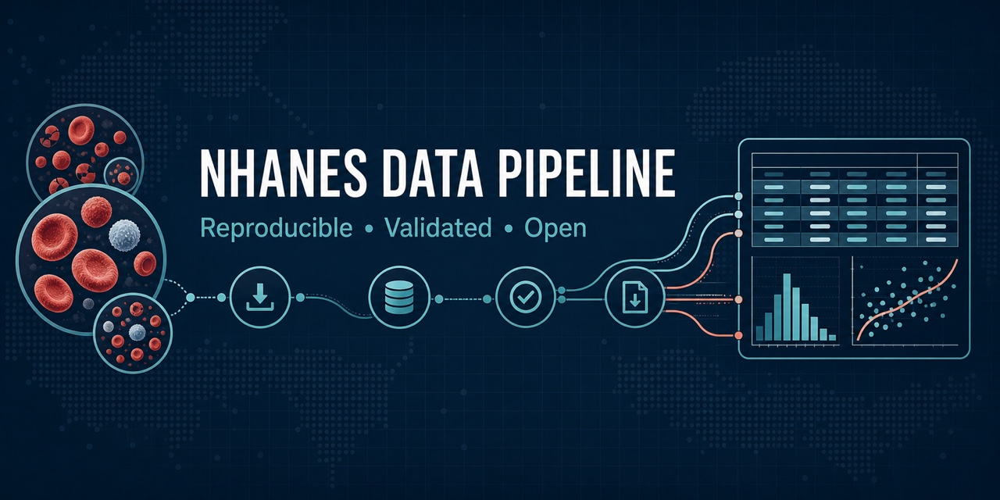

Reproducing the NHANES CBC and Demographic Data Pipeline in R
A complete beginner’s guide to downloading, validating, combining, and analyzing NHANES Complete Blood Count and Demographic data from 1999–2018
Beginner-friendly NHANES training in R
Build the NHANES CBC and Demographic Data Pipeline from beginning to end.
Learn how to use R and Visual Studio Code to download official NHANES Complete Blood Count and Demographic files, preserve survey-cycle metadata, investigate duplicate records, merge participants safely, validate the results, and create an exploratory analysis.

The broader website is dedicated to reproducible NHANES laboratory data pipelines in R.
This tutorial focuses specifically on:
- Complete Blood Count laboratory data;
- Demographic data used to describe and link participants;
- survey-design variables stored in the Demographics files;
- ten continuous NHANES cycles;
- 1999–2000 through 2017–2018.
The workflow should not be applied automatically to every NHANES laboratory component. Glycohemoglobin, urine, lipids, chemistry, environmental biomarkers, and other components require their own eligibility, harmonization, method, weighting, and validation rules.
What you will build
By the end of this course, your R project will be able to:
- create an organized project directory;
- install and load required R packages;
- define CBC and Demographic source files;
- construct CDC download URLs;
- download SAS transport files;
- read
.xptfiles into R; - add survey-cycle and source-file metadata;
- combine files across multiple cycles;
- identify repeated participant keys;
- distinguish exact duplicates from repeat examinations;
- preserve the 2001–2002 second CBC examination separately;
- validate
survey_cycle + SEQN; - merge primary CBC and Demographic records safely;
- create validation and duplicate-audit reports;
- save RDS and CSV outputs;
- summarize hemoglobin by cycle and sex;
- create and save an exploratory graph.
Learning objectives
By the end of the tutorial, you should be able to:
- Explain how continuous NHANES data are organized.
- Distinguish laboratory data from supporting Demographic data.
- Explain what
.R,.qmd,.xpt,.rds, and.csvfiles are. - Run R code in Visual Studio Code.
- Create a reproducible project structure.
- Install and verify R packages.
- Construct NHANES download URLs programmatically.
- Read SAS transport files with
haven. - Combine data using
dplyr. - Detect duplicate participant keys.
- Explain why duplicates should not be deleted blindly.
- Separate primary and repeat CBC examinations.
- Validate a composite participant key.
- Merge CBC and Demographic data safely.
- Create post-merge validation reports.
- Save reusable and shareable data outputs.
- Produce descriptive summaries and figures.
- Explain why formal NHANES estimates require survey weights and design variables.
Why CBC data need Demographics
The CBC laboratory files contain blood measurements.
The Demographics files provide supporting information such as:
- participant age;
- sex;
- race and Hispanic origin;
- education and income variables;
- interview and examination weights;
- masked variance strata;
- masked primary sampling units.
A laboratory file alone is therefore not sufficient for most meaningful analyses.
flowchart LR
A[CBC laboratory results] --> D[Analysis dataset]
B[Demographics] --> D
C[Survey design variables] --> DThe workflow you will reproduce
flowchart TD
A[Install R and VS Code] --> B[Create the project]
B --> C[Install packages]
C --> D[Understand NHANES data]
D --> E[Define the source catalog]
E --> F[Download one file]
F --> G[Download all files]
G --> H[Inspect imported data]
H --> I[Handle duplicate records]
I --> J[Combine component files]
J --> K[Merge CBC and Demographics]
K --> L[Validate results]
L --> M[Label variables]
M --> N[Save outputs]
N --> O[Analyze hemoglobin]
O --> P[Create and save graph]
P --> Q[Run the complete script]Your final project structure
nhanes-cbc-demo/
├── nhanes_pipeline.R
├── scripts/
│ └── nhanes_pipeline.R
├── data/
│ ├── raw/
│ │ ├── cbc/
│ │ └── demographic/
│ └── processed/
├── outputs/
│ ├── duplicate-reports/
│ ├── figures/
│ ├── tables/
│ └── validation/
└── README.mdTwo ways to complete the course
Guided mode
Guided mode is recommended for beginners.
You will:
- read the explanation;
- copy one code section;
- paste it into
nhanes_pipeline.R; - run the code;
- compare your result with the expected output;
- complete the checkpoint;
- continue to the next section.
Complete-script mode
Complete-script mode is for learners who have already completed the guided lessons or who want to rerun the full pipeline.
The final script can be executed with:
Rscript scripts/nhanes_pipeline.RCourse lessons
Getting started
Acquire the data
Build and validate the pipeline
Analyze and communicate
Complete the course
How each lesson is structured
Every lesson contains:
Learning objective
What you should understand or be able to do by the end of the lesson.
Why this matters
The scientific or technical reason for completing the step.
Run this code
A copyable R section that fits into the final script.
Expected result
Console output, tables, files, or figures that you should see.
Checkpoint
A checklist confirming that the step worked.
Knowledge check
A short question that tests the central concept.
Important duplicate-handling principle
The 2001–2002 release includes:
L25_B, the primary CBC examination;L25_2_B, a second CBC examination.
The same participant can appear in both files.
Appending the two files by rows can therefore create duplicate participant keys.
dplyr::distinct(
SEQN,
.keep_all = TRUE
)This code keeps one arbitrary participant row and discards the others.
It does not determine whether the other records are:
- exact duplicates;
- repeat measurements;
- complementary records;
- conflicting records.
The tutorial investigates the scientific meaning before deciding what to retain in the primary analytical dataset.
Expected final outputs
data/processed/
├── cbc_primary_1999_2018.rds
├── cbc_second_exam_2001_2002.rds
├── demographics_1999_2018.rds
└── cbc_demographics_1999_2018.rdsoutputs/validation/
├── source_summary.csv
├── key_validation.csv
├── merge_validation.csv
├── package_versions.csv
└── session_info.txtoutputs/duplicate-reports/
├── shared_second_exam_participants.csv
├── exact_duplicate_rows.csv
└── unresolved_conflicts.csvoutputs/figures/
└── mean_hemoglobin_by_cycle_and_sex.pngSurvey-weight warning
The beginner analysis creates descriptive unweighted summaries.
Those summaries describe the analytical records in the dataset.
They are not automatically nationally representative.
Formal NHANES inference requires:
- the appropriate survey weight;
SDMVSTRA;SDMVPSU;- correctly constructed multi-cycle weights;
- complex-survey analysis methods.
Review:
Ready to begin?
Start by understanding the pipeline and the data.
Lesson 1 introduces NHANES, Complete Blood Count data, supporting Demographic data, and the duplicate-handling problem that motivates the workflow.